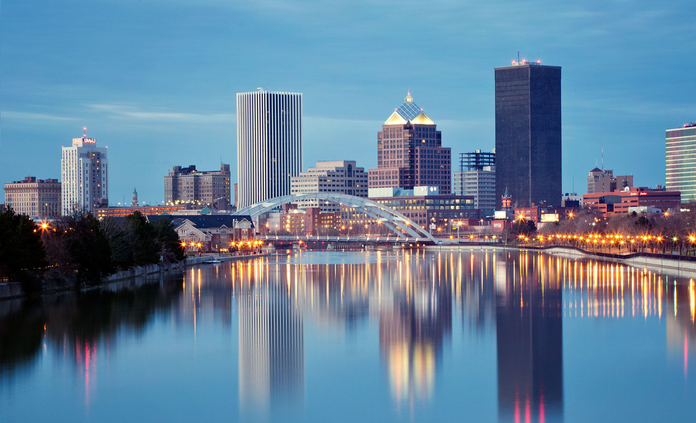
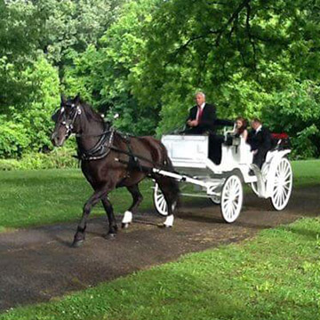
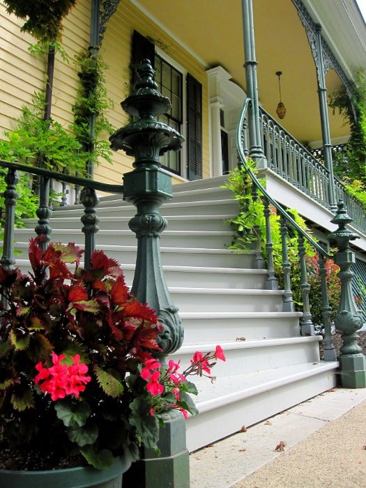
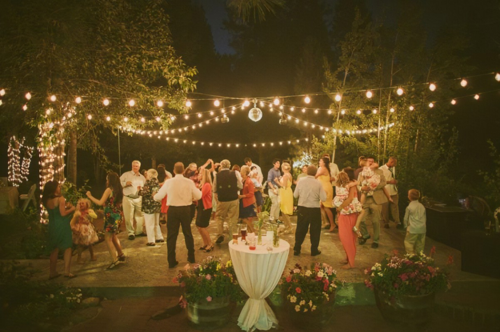

Events

Sacrament of Holy Matrimony 1PM - 2PM
The Sacrament of Holy Matrimony will be held at Sacred Heart Cathedral in downtown Rochester.
Sacred Heart Cathedral
296 Flower City Park, Rochester, NY 14615
Family Photos 2PM - 2:30PM
Sacred Heart CathedralOrder of photos:
- 1. Family of Mary Kapp
- 2. Family of Lawrence Kapp
- 3. Brendan Kapp's Godparents
- 4. Family of Julie Staton
- 5. Family of Blake Staton
- 6. Immediate Family of the Bride and Groom

We have compiled some of our favorite places to eat and visit!
Your time to explore Rochester! 2:30PM - 6PM
Rochester & CanandaiguaWe have compiled some of our favorite places to eat and visit!

Reception (Cocktail Style)
6PM - 9PMGranger Homestead in Canandaigua
Plenty of parking on the grounds! Drive all the way up towards the house to find the parking!
Granger Homestead
295 North Main Street, Canandaigua, NY
Reception Timeline:
- (6:00 pm): Appetizers and Drinks
Things to do at the venue:- • Enjoy cheese and charcuterie
- • Take a carriage ride
- • Walk through the museum, mansion, and grounds
- • Play croquet or bocce
- • Eat, drink, and dance
- (6:15 pm): Wedding Party Entrance
- Side entrance near the dance floor and bar
- (7:00 pm): Wedding Party Dances
- Dance floor
- • Bride & Groom Dance
- • Father & Daughter Dance
- • Mother & Son Dance
- (7:30 pm): Desserts from Savois and Cake Cutting
- Dessert table (inside mansion)
- (9:00 pm): Sparkler Mr. & Mrs. Send Off
- Driveway


